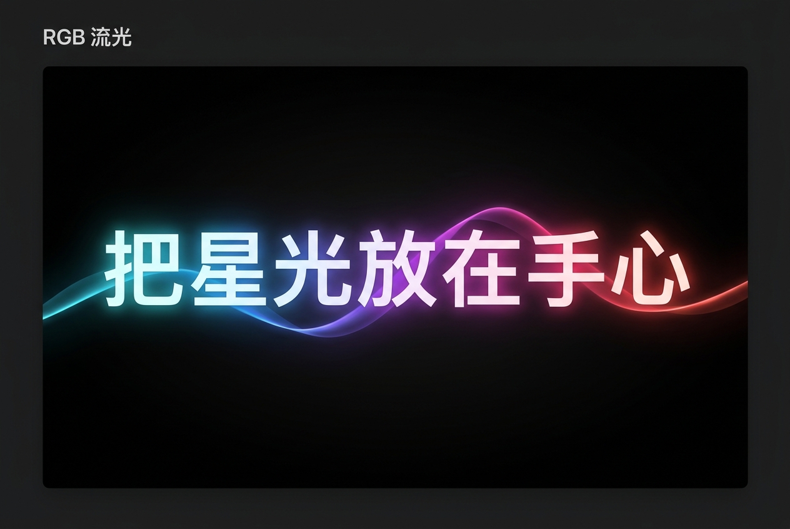
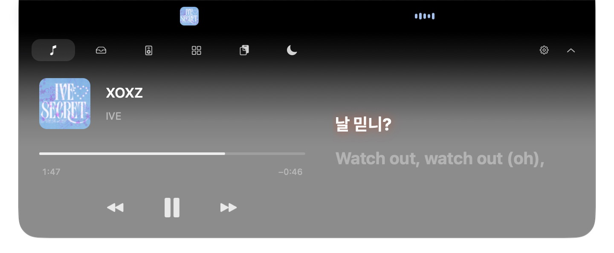

有时间轴，逐字走。
有可靠的逐字时间轴时，渐亮、羽化、上浮和 HDR 高亮跟着同一进度变化。长句自动换行，暂停时停在当前进度。
macOS 版 · 1.8.4
把日常放在屏幕顶端。
音乐、流光歌词和系统提示，抬眼就能看到。点一下刘海，展开播放和常用操作。
Apple 芯片 · macOS 15 或更新版本歌词与流光
收起时，歌词随换句上下滚动。展开时，上一句、当前句、下一句和再下一句依次排开，当前句更亮，旁边三句也看得清。

有可靠的逐字时间轴时，渐亮、羽化、上浮和 HDR 高亮跟着同一进度变化。长句自动换行，暂停时停在当前进度。
普通 LRC 按句显示。RGB 流光让颜色在字间流动，封面流光则取色于正在播放的专辑封面。
刘海里的日常
收起时以纯黑贴住屏幕顶边。展开可选纯黑、标准液态玻璃、轻模糊或清透玻璃，外框保持连续圆角。
原生液态玻璃适用于 macOS 26 或更新版本。较早版本和开启「减少透明度」时使用纯黑外观。
自动跟随 Music 或 Spotify，显示歌名、封面和进度，提供播放控制。
音量、亮度、输入法、电源和通知提示，连同 AirPods 电量与音频输出切换。
专注、倒计时、闹钟与日历。展开后也能暂存文件、查看剪贴板历史或打开快捷指令。
打开 DMG，把 NotchIsland 拖到「应用程序」。
1.8.4 · 构建 26。适用于 Apple 芯片及 macOS 15 或更新版本。DMG 采用本地 ad-hoc 签名，尚未公证。
首次使用时，按功能需要授予辅助功能、自动化、蓝牙或日历权限。音量与亮度提示依赖媒体键接管和辅助功能权限。AirPods 自动提示以 Mac 实际切换音频输出为准。
歌词优先使用本地 LRC。开启在线查找时，应用会向 LRCLIB 提交曲名、歌手、专辑和时长。查找也可能通过网易云音乐检索曲名与歌手。
1.8.4 的快照检查中，省资源模式的换句滚动仍有异常。详见 版本记录。